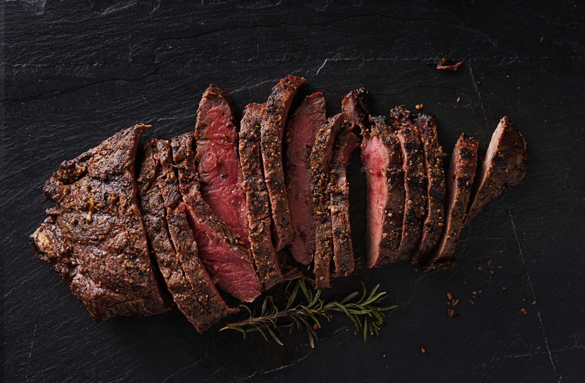
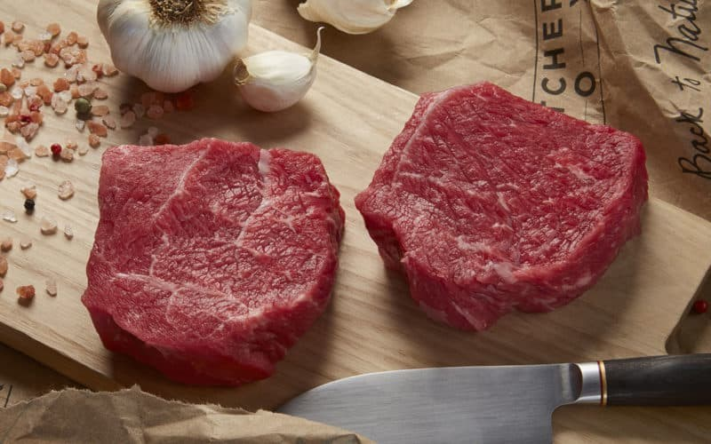
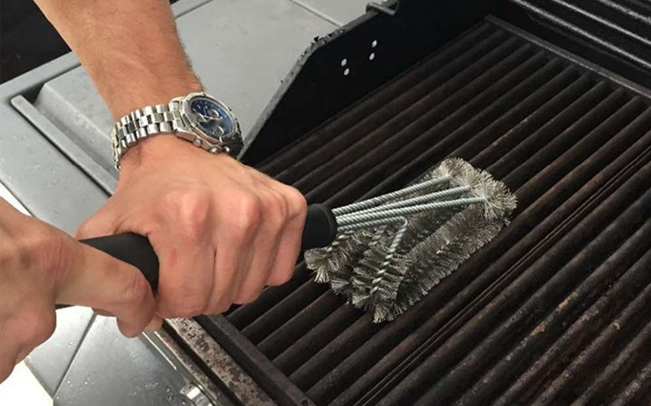
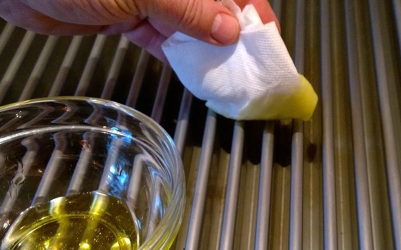
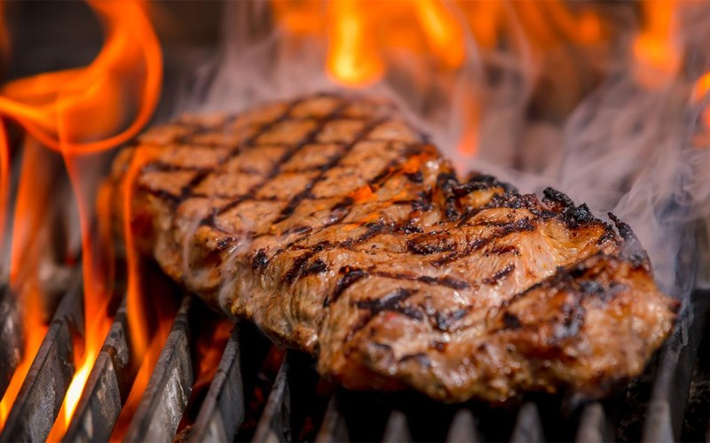
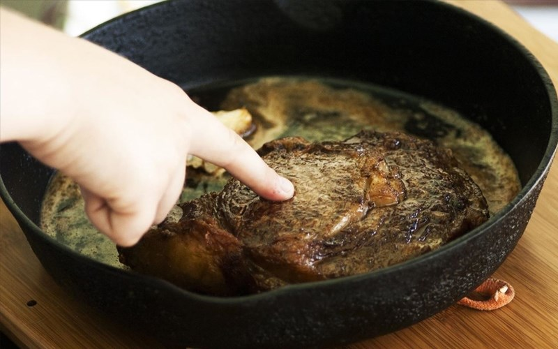
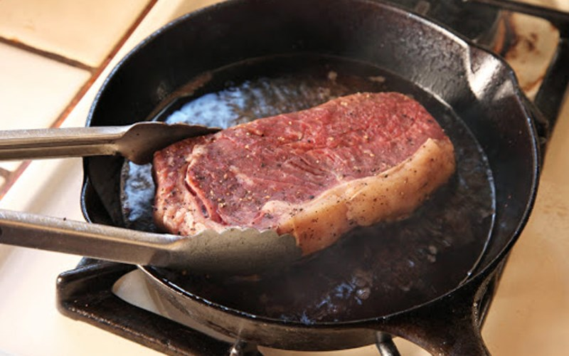
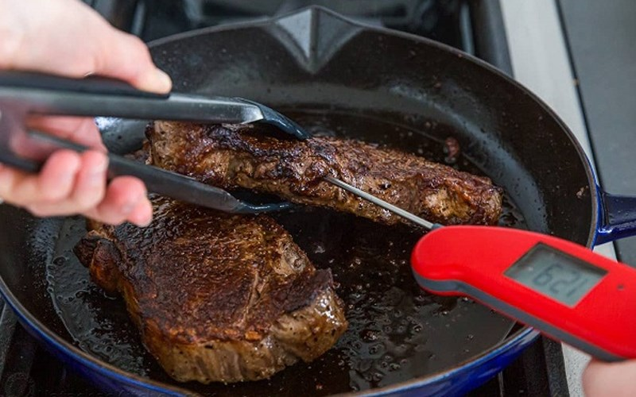

Một số loại gia vị cần thiết khác: Muối, đường, dầu olive, muối tiêu, bơ, bột bò cô đặc…
Các bước làm steak

1. Cho thịt trở về nhiệt độ phòng
Đối với steak mới mua về thì bạn có thể sơ chế món ngay. Nhưng đối với những miếng steak được bảo quản trong ngăn đông tủ lạnh, bạn nên để thịt rã đông trong khoảng 30 phút đến khi thịt trở về nhiệt độ phòng. Sau đó bạn có thể rắc một ít muối, tiêu để ướp thịt trước khi nướng hoặc áp chảo.
Bạn không nên chế biến steak ngay khi vừa lấy ra khỏi tủ lạnh, vì khi chế biến phần thịt bên ngoài sẽ chín nhanh hơn trong khi bên trong còn sống, như vậy miếng steak sẽ không được ngon và mềm đó nha.

2. Làm sạch vỉ nướng
Để steak giữ nguyên được hương vị thịt, không bị bám mùi thức ăn khác ảnh hưởng đến món ăn, bạn nên vệ sinh vỉ nướng trước khi nướng bằng cách vệ sinh vỉ bằng bàn chải sắt cứng. Tốt nhất là nên vệ sinh vỉ ngay khi vừa nướng xong, bởi lúc vỉ còn ẩm sẽ dễ dàng làm sạch hơn.

3. Phủ lên một ít dầu
Trước khi đặt thịt lên vỉ nướng, bạn nên quết một lớp dầu mỏng (dầu oliu hoặc dầu có hương vị trung tính) lên trên vỉ để giúp việc lật món ăn ra khỏi vỉ dễ dàng hơn, cũng như giúp miếng thịt mềm hơn khi nướng.

4. Điều chỉnh nhiệt lượng
Để nướng được một miếng steak ngon, có độ chín theo sở thích, bạn cần điều chỉnh 2 mức nhiệt độ khác nhau khi nướng.
Đầu tiên, bạn làm nóng vỉ nướng ở nhiệt độ cao trước khi nướng, rồi cho miếng thịt lên trước nướng đến khi khi thịt chuyển sang màu vàng cánh gián thì lật miếng thịt lại. Nướng thịt ở nhiệt độ cao trước giúp thịt săn lại và giữ được hình dáng đẹp mắp.
Kế đến, khi lớp bên ngoài steak đã chín và giòn bạn cần điều chỉnh lửa ở mức trung bình và nướng tiếp cho lớp thịt bên trong đạt được độ chín theo mong muốn. Nếu bạn đang sử dụng bếp nướng than hoa, thì một bên phải có ngọn lửa nóng lớn, bên còn lại nên có ngọn lửa nhỏ hơn.

5. Kiểm tra độ chín của steak
Để biết được steak đang chín khoảng bao nhiêu phần bạn có thể nhìn bên ngoài của miếng thịt và dùng tay chạm vào miếng thịt và cảm nhận. Khi thịt ở mức raw (thịt sống) sờ vào thịt rất mềm, thịt còn máu và đỏ. Với mức độ rare (tái) khi sờ thịt khá mềm, thịt hơi săn lại. Mức độ medium (chín vừa) khi sờ vào, thịt sẽ quay lại hình dạng ban đầu ngay. Cuối cùng là mức độ well done (chín kỹ) sờ vào sẽ cảm thấy rất săn chắc, thịt lúc này thường sẽ khá khô.

6. Không trở steak quá nhiều lần
Trong quá trình nướng steak bạn tuyệt đối không lật qua lại miếng steak quá nhiều lần. Mà chỉ nên điều chỉnh nhiệt độ từ lửa lớn xuống lửa nhỏ và lật miếng steak khoảng 1 - 2 lần. Ngoài ra, trong lúc nướng bạn không nên dùng cây gắp đè thịt xuống vỉ nướng hay dùng nĩa đâm vô miếng thịt, bởi sẽ làm cho phần nước bên trong thịt chảy hết ra ngoài khiến thịt sau khi nướng sẽ khô, dai.

7. Sử dụng nhiệt kế và đồng hồ
Với mỗi độ dày, loại thịt khác nhau nên khi nướng thời gian chế biến cũng sẽ hơi chênh lệch. Vì vậy để có được miếng thịt theo mong muốn bạn nên sử dụng nhiệt kế và đồng hồ để canh chỉnh chính sang thời gian, độ chín của miếng thịt.
Đối với các loại thịt dày bạn nên sử dụng nhiệt kế để đo được độ chín. Mức độ chín rare nhiệt độ đạt là 120 – 125 độ F (48.8 – 51.6 độ C). Mức chín medium rare nhiệt độ khoảng 125 – 130 độ F (51.6 – 54.4 độ C). Mức chín medium nhiệt độ 130 – 135 độ F (54.4 – 57.2 độ C).
Còn đối với những miếng steak mỏng bạn sẽ canh theo nhiệt độ trong khoảng 3 - 5 phút cho mỗi mặt, rồi lật lại là sẽ có ngay phần steak với độ chín bạn muốn nha.

8. Để thịt nghỉ ngơi
Thịt sau khi nướng hoặc áp chảo xong, bạn không nên cắt thịt ngay mà cần để yên miếng thịt trên thớt trong khoảng 5 - 10 phút. Bởi trong thời gian để thịt nghỉ, phần nươc bên trong thịt sẽ được phân bổ đều ra khắp miếng thịt giúp cho bên trong được chín đều và có độ ẩm hơn.